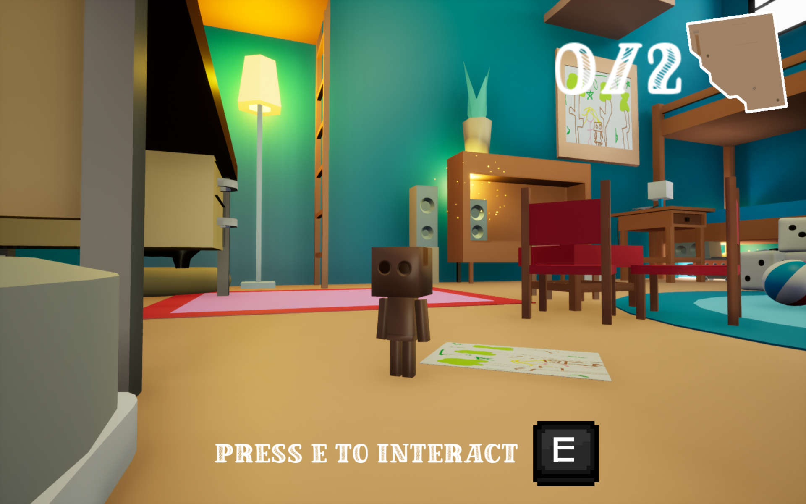

Welcome to My Eportfolio
Hi there! I'm Jérémie Crosnier. Explore my journey, my professional growth, and my experiences here.
Hi there! I'm Jérémie Crosnier. Explore my journey, my professional growth, and my experiences here.
I'm studying in the digital sciences department at ENSEEIHT.
The United States, Canada and Germany are countries in which I would be interested in carrying out an international mobility project.
I played basketball for 9 years. Being part of a team taught me the joy of collaboration, self-improvement, and working towards a common goal. This experience not only helped me grow as an individual but also taught me valuable lessons about teamwork and perseverance.
I also enjoy creating small video games with my friends during Game Jams. These events are always incredibly enriching, allowing me to learn, grow, and explore the fascinating world of video game development. Collaborating under time constraints sharpens my creativity and problem-solving skills, making each project a unique challenge and a rewarding experience.
